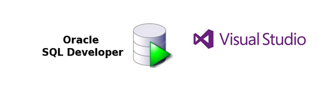

2.3.- Otros IDE.
En este epígrafe estamos viendo los entornos de desarrollo integrados que se utilizan para el desarrollo de aplicaciones web y para el desarrollo de aplicaciones multiplataforma.
Además de NetBeans y Eclipse, que podríamos decir que son los IDE más versátiles en cuanto a lenguajes de programación y tipo de software que se puede desarrollar con los mismos, vamos a mencionar otros dos entornos de desarrollo que se utilizarán en DAM y en DAW. Vamos a ver el IDE SQLDeveloper, desarrollado por Oracle y que se utiliza para realizar operaciones con las bases de datos de dicho Sistema Gestor de Base de Datos, y Visual Studio, el cual nos permite desarrollar desde juegos con Unity, como aplicaciones móviles para iOs y Android, así como aplicaciones de escritorio y aplicaciones web.
